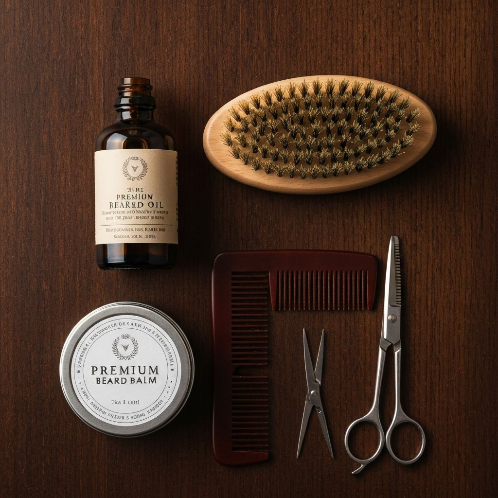

Growing a great beard is only half the battle. Keeping it looking sharp between professional beard trims is what separates a well-groomed gentleman from someone who just stopped shaving. Whether you're rocking a full beard, stubble, or a styled goatee, this guide will help you maintain that fresh-from-the-barber look.
As a mobile barber serving Rocky Mount, Greenville, Wilson, and Tarboro NC, I help clients with beard grooming every day. Here's everything I tell my clients about maintaining their beards at home between professional appointments.
Why Beard Maintenance Matters
A well-maintained beard tells the world you take pride in your appearance. But there are practical reasons to keep up with beard care too:
- Healthier hair growth - Regular maintenance removes split ends and promotes even growth
- Better skin health - Proper care prevents itchiness, dandruff, and ingrown hairs
- Professional appearance - A neat beard is appropriate for any workplace
- Comfort - Well-moisturized beards are softer and more comfortable
- Longer-lasting shape - Daily maintenance preserves your barber's work
Your Daily Beard Care Routine
A good beard care routine doesn't take long - just 5-10 minutes each morning. Here's what I recommend to all my beard trim clients:
Use a dedicated beard wash (not regular shampoo) 2-3 times per week. Regular shampoo strips natural oils and can make your beard dry and brittle. On other days, just rinse with warm water.
While your beard is still slightly damp, apply 3-5 drops of beard oil. Work it into the hair and down to the skin beneath. This hydrates both your beard and the skin underneath, preventing itchiness and flaking.
Use a boar bristle brush or wide-tooth comb to distribute the oil evenly and train your beard to grow in the right direction. Always brush downward, following your beard's natural growth pattern.
If you have a longer beard, apply beard balm for hold and shaping. For shorter beards or stubble, a light styling cream keeps everything in place without looking greasy.
Weekly Beard Maintenance Tasks
In addition to your daily routine, these weekly tasks keep your beard in top shape between professional beard trims:
Neckline Cleanup
The neckline is where most beards start looking unkempt first. To find your natural neckline, place two fingers above your Adam's apple - that's where your beard should end. Use a trimmer without a guard to keep this line clean, and shave below it every few days.
Cheek Line Touch-Up
If your barber created a defined cheek line, maintain it by shaving any stray hairs that grow above the line. Be careful not to lower the line - it's easier to let a barber fix this than to regrow hair you accidentally removed.
Stray Hair Trimming
Even with a professional beard shape, some hairs grow faster than others. Use small scissors or a precision trimmer to snip any hairs that stick out beyond your beard's shape. Do this in good lighting, and trim conservatively.
Common Beard Problems and Solutions
Beard Itch
Cause: Dry skin beneath your beard, often from lack of moisture or over-washing.
Solution: Apply beard oil daily, focusing on working it down to the skin. Reduce washing frequency and use a beard-specific wash. If itching persists, try a beard oil with tea tree or eucalyptus.
Beard Dandruff (Beardruff)
Cause: Dry, flaky skin that falls onto your clothes. Often worse in winter.
Solution: Exfoliate the skin under your beard weekly with a gentle scrub. Use beard oil consistently, and consider a beard conditioner if dryness is severe.
Patchy Growth
Cause: Genetics determine beard density, but poor care can make patches more noticeable.
Solution: Keep your beard at a length that minimizes the appearance of patches. A skilled barber can shape your beard to work with your natural growth pattern. Ask me about this during your next mobile barber appointment.
Unruly or Curly Beard
Cause: Natural texture and growth patterns.
Solution: Beard balm provides hold to tame curls. Brush consistently to train hairs to lay flat. A boar bristle brush works better than a comb for curly beards.
Essential Beard Grooming Products

You don't need a cabinet full of products, but these basics make a significant difference:
- Beard Wash - Gentler than shampoo, designed for facial hair
- Beard Oil - Daily moisture for beard and skin (I recommend jojoba or argan oil bases)
- Beard Brush - Boar bristle for distribution and training
- Beard Comb - Wide-tooth for detangling longer beards
- Beard Balm - For hold and shaping (longer beards)
- Small Scissors - For trimming stray hairs
- Quality Trimmer - For neckline and cheek line maintenance
How Often Should You Get a Professional Beard Trim?
The answer depends on your beard style and how fast your hair grows:
- Stubble: Every 1-2 weeks to maintain the length
- Short beard: Every 2-3 weeks for shape maintenance
- Medium beard: Every 3-4 weeks
- Long beard: Every 4-6 weeks, with at-home maintenance in between
Many of my clients in Rocky Mount, Greenville, Wilson, and Tarboro book their beard trims with their haircuts, which is the most efficient approach. I offer combo packages that include both services at a better value.
Need a Professional Beard Trim?
Book your mobile barber appointment for expert beard grooming at your home or office. I serve Rocky Mount, Greenville, Wilson, and Tarboro NC with professional beard shaping, trimming, and conditioning.
Book Beard GroomingBeard Styles That Work in Professional Settings
If you work in an office or client-facing role, here are beard styles that look polished:
Corporate Stubble
3-5 day growth, maintained at a consistent length. Clean neckline and cheek lines. Professional yet modern.
Short Box Beard
Even length all around, typically 1/2 to 1 inch. Well-defined edges. The most versatile professional beard style.
Classic Full Beard
Longer but well-maintained. Requires regular professional shaping to look intentional rather than unkempt.
Goatee
Clean-shaven cheeks with beard on chin and mustache. Requires precise edges and regular maintenance.
Seasonal Beard Care Tips
Summer Beard Care
Hot, humid weather means lighter products. Use beard oil sparingly and consider a lighter balm. Wash more frequently if you're sweating, and protect your skin from sun damage.
Winter Beard Care
Cold, dry air is tough on beards. Increase beard oil application, use a heavier balm, and consider adding a beard conditioner to your routine. The dry indoor heating in homes across Rocky Mount, Greenville, Wilson, and Tarboro can be especially harsh on facial hair.
Final Thoughts: The Value of Professional Beard Care
While at-home maintenance is essential, nothing replaces a professional beard trim. A skilled barber can:
- Create a shape that complements your face
- Clean up edges with straight-razor precision
- Identify and address beard health issues
- Recommend products specific to your beard type
- Provide hot towel treatment for deep conditioning
As your mobile barber, I bring all of these professional services directly to your home or office in Rocky Mount, Greenville, Wilson, and Tarboro NC. No need to find a "beard trim near me" and drive there - I come to you.
Call or text: (919) 809-0529
Service areas: Rocky Mount NC, Greenville NC, Wilson NC, Tarboro NC